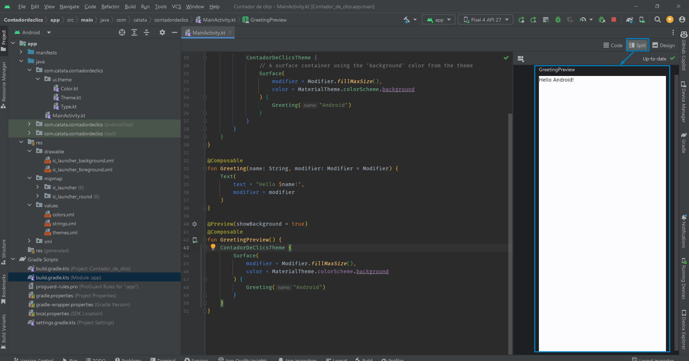

La experiencia de uso en las aplicaciones móviles y en las aplicaciones de escritorio es muy diferente.
En una aplicación móvil la interacción del usuario no empieza siempre en el mismo lugar.
Por ejemplo:
Si se abre la aplicación de correo electrónico lo más habitual es que se muestre la bandeja de entrada o la última ventana abierta en la aplicación.
Si se está navegando por una página web y se pulsa el botón de contacto para enviar un mail,
es probable que se abra la aplicación de correo pero directamente para escribir el correo electrónico.
En las aplicaciones de escritorio el punto de inicio de la aplicación es el método main que incluye el código que se ejecuta al iniciar la aplicación.
En las aplicaciones móviles no se puede realizar de la misma manera debido a que se puede iniciar una aplicación en diferentes puntos de la misma como se ha visto en el punto anterior.
Es por ello que el ciclo de vida de las aplicaciones móviles es distinto al de las aplicaciones de escritorio.
Activities
La clase Activity es un componente crucial en una aplicación Android.
En Android cada pantalla de la aplicación está definida en una Activity.
Una Activity es el punto de entrada para la interacción del usuario con la aplicación.
En Android el código que inicia una Activity corresponde a una llamada a un método que corresponde a una de las etapas específicas del ciclo de vida de la Activity.
Conforme el usuario navega, sale y regresa a la aplicación, las diferentes Activities de la aplicación pasan por diferentes estados de su ciclo de vida (lifecycle).
Ciclo de vida de una Activity
Ciclo Vida Actividades
Hay que destacar que Android tiene un comportamiento peculiar.
Una Activity activa se destruye y se vuelve a crear cuando:
Se cambia la orientación del dispositivo.
Se cambia entre los modos claro y oscuro.
Se cambia la configuración del dispositivo, por ejemplo el idioma.
Tener en cuenta esto es muy importante a la hora de desarrollar las aplicaciones.
Actividad relanzada
La clase Activity proporciona una serie de funciones de retorno (callbacks) que permiten saber a la actividad que ha cambiado de estado:
onCreate()
onStart()
onResume()
onPause()
onStop()
onDestroy()
El sistema invoca a cada uno de estos callbacks cuando una actividad cambia de estado de su ciclo de vida (lifecycle).
Con los callbacks del ciclo de vida se declara cómo se comporta la actividad cuando el usuario deja y vuelve a la actividad.
Por ejemplo:
Si se está creando un reproductor de video por streaming se puede indicar que se pause el vídeo y se finalice la conexión de red si el usuario cambia de aplicación.
Cuando el usuario vuelva a la actividad se puede reconectar y reanudar la reproducción.
Programación imperativa vs declarativa
El lenguaje de programación Kotlin dispone de características que lo acercan a la programación declarativa.
Ejemplo: Recorrer un array y transformarlo en otro
Java: se realiza un for para pasar por todos los elementos,
se indica cómo se transforma cada elemento y por último, se almacena en el array final.
Kotlin: se utiliza la función map
en la que se dice que una lista la mapee a otra sin indicar si tiene que crear una lista nueva, ni si tiene que añadir los elementos, ni el orden.
Aplicaciones Nativas en Android
Hoy en día para desarrollar aplicaciones nativas en Android hay dos opciones:
Tradicional con Views (Vistas): programación imperativa.
La interfaz gráfica se define en archivos XML en los que se indican los elementos gráficos (Views) y en el código del programa se indica cómo se realizan todas las acciones.
En el código del programa se indican los elementos gráficos (UI declarativas) y qué funcionalidad tienen (programación imperativa).
Uno de los puntos fuertes de las interfaces de usuario declarativas es que los elementos de la interfaz se conectan al estado de la Activity.
De esta manera si un elemento de la interfaz cambia, el estado cambia y la interfaz se repinta para representar ese nuevo estado.
Esto se realiza de manera automática sin tener que indicar nada como programadores.
Este sistema está muy optimizado y solo las partes afectadas por ese cambio de estado son las que se repintan.
Ventajas del uso de interfaces de usuario declarativas:
Menos código.
Código más sencillo y fácil de entender/leer.
Evita clases intermedias que pueden proveer de errores.
Intuitivas.
Al engancharse al estado de la aplicación la vista se encarga de todo.
Muy rápidas.
Vistas previas de cualquier componente.
Muy potentes.
Frameworks como React Native, Flutter o
Swift UI utilizan el paradigma de interfaces de usuario declarativas.
En este curso se verá el uso de Jetpack Compose por ser la tendencia actual del mercado.
En el desarrollo de aplicaciones nativas Android se pueden mezclar la manera tradicional con XML y Jetpack Compose.
Jetpack Compose
Jetpack Compose es un kit de herramientas (toolkit) para crear y compilar interfaces de usuario declarativas para Android.
Se basa 100% en Kotlin.
Se incorpora a partir de la versión Artic Fox (2021) de Android Studio.
Las aplicaciones desarrolladas con Jetpack Compose se pueden ejecutar en las versiones de Android 5.0 (API 21) y superiores.
Logo Jetpack Compose
Jetpack Compose solo está disponible para Android.
Se compone de:
Compilador: plugin gradle que genera el código necesario.
Runtime: entorno de ejecución que genera y mantiene el árbol de nodos para saber los elementos que se encuentran en al interfaz.
Librería de UI: decide cómo se interpreta y se pinta el árbol de nodos.
Tanto el compilador como el runtime son "fijos" y trabajan de forma genérica.
La librería de UI es un componente que puede cambiar
y ahora mismo la única versión estable es Jetpack Compose que es para Android.
Jetbrains está creando las librerías:
Compose for Desktop (Windows, Mac y Linux)
Compose for web (experimental)
Compose for iOS (alpha)
Todas ellas se agrupan junto a Jetpack Compose en el proyecto Compose Multiplatform
que permite desarrollar una aplicación con Compose y generar el ejecutable para Android, iOS, escritorio y web como ya ocurre con Flutter.
Desarrollo Android con Jetpack Compose
El uso de Jetpack Compose para el desarrollo de aplicaciones Android consiste en
definir la interfaz gráfica de la aplicación de manera declarativa.
Para definir la interfaz gráfica se usan componentes de Jetpack Compose que pueden ser los ofrecidos por el sistema o bien los propios definidos por el programador.
Un componente Jetpack Compose puede contener a otro componente Jetpack Compose.
Es habitual usar este comportamiento para crear componentes propios que extiendan la funcionalidad de otros componentes ya existentes.
Si se necesita también se puede utilizar la programación imperativa: variables, clases, estructuras de control, funciones…
Crear un proyecto en Android
La mejor manera de entender cómo funciona Android Studio es realizar una aplicación sencilla donde se utilicen algunos de los componentes y funcionalidades.
Así, esta unidad va a consistir en explicar los conceptos a la vez que se crea una aplicación.
Algunos conceptos que se verán se explicarán más detenidamente en las siguientes unidades.
La aplicación que realizaremos consistirá en un contador de clics como la que se muestra en la imagen.
Contador de clics
Una vez abierto Android Studio hay varias opciones para crear un proyecto:
Si no hay abierto ningún proyecto Android: Hacer clic en New Project.
New Project
Si hay un proyecto abierto hay dos opciones:
Cerrar proyecto y a continuación hacer clic en New Project.
Crear un nuevo proyecto directamente.
Crear proyecto desde un control de versiones (VCS): Se debe poner la URL del repositorio.
Al crear el proyecto, Android Studio muestra una ventana con todas las plantillas disponibles.
Se debe elegir Phone and Tablet y a continuación Empty Activity (utiliza Jetpack Compose).
Selección de plantilla
Las plantillas con el texto Views en el nombre utilizan la programación tradicional con XML.
A continuación, se debe rellenar las opciones del proyecto:
Nombre: debe ser significativo.
Paquete: debe ser único, para estar seguros de esto se seguirá la siguiente estructura
com.XXYYZZ.nombreproyecto. Donde XX dos primeras letras del nombre, YY dos primeras letras del primer apellido y ZZ dos primeras letras del segundo apellido.
Save location: directorio que se quiera guardar el proyecto
Minimum SDK: API 24 ("Nougat"; Android 7.0).
La elección del SDK mínimo es un paso crucial en el inicio de un proyecto.
Versión más baja posible -> soporte a la mayor cantidad de dispositivos.
Versión más alta posible -> tener todas las características y funcionalidades.
En todas las actividades del curso (en la medida de lo posible) se va a elegir la versión API 24 (alcance de un 95,4%).
Aunque se podría elegir sin problema las versiones API 27 (90,2%) o API 28 (84,1%) ya que hoy en día pocos dispositivos están por debajo de esas versiones.
Selección datos proyecto Una vez seleccionadas todas las opciones se debe hacer clic en Finish.
En ese punto Android Studio comenzará a crear el proyecto.
Durante la creación del proyecto Android Studio realizará la descarga de todos los componentes necesarios.
Se recomienda no interactuar con el programa hasta que no finalice por completo la creación del proyecto.
En la parte inferior derecha se puede consultar la barra de progreso con las descargas y creación del proyecto.
Estructura de Un proyecto en Android
Una vez creado el proyecto se pueden ver todos los archivos del mismo.
Depende de la visualización que se seleccione (Project, Android…) los archivos se podrán encontrar en un lugar o en otro.
A continuación, se explicará los más importantes.
Estructura proyecto
Archivo: AndroidManifest.xml
Vista Project -> app/src/main/AndroidManifest.xml
Vista Android -> manifests/AndroidManifest.xml
Describe las características fundamentales de la aplicación y sus componentes. En él se especifican las Activities (pantallas) que tiene la aplicación
y qué permisos requieren dichas Activities: cámara, contactos, internet…
Archivos: build.gradle
Android Studio utiliza Gradle para compilar y construir la aplicación.
Hay un archivo build.gradle para todo el proyecto y otro archivo build.gradle por cada módulo del proyecto.
Por lo general, solo interesará el archivo build.gradle del módulo app.
En este archivo están las dependencias de compilación de la aplicación y también la configuración predeterminada.
Vista Project -> app/build.gradle
Vista Android -> Graddle Scripts/build.gradle.kts (Module: app)
Archivo: build.gradle.kts (Module: app)
compiledSdk -> Versión a la que se va a compilar.
Por defecto, es la última versión SDK instalada en el ordenador
applicationId -> Nombre completo del paquete de la aplicación.
minSdk -> Versión mínima de SDK especificada al crear el proyecto.
Será la versión más antigua que admita la aplicación.
targetSdk -> Versión más alta con la que se prueba la aplicación.
dependencias -> Sección donde añadir las dependencias que se quieren instalar
para la aplicación.
Archivo: MainActivity.kt
Vista Project -> app/src/main/java/com.catata.contadordeclics/MainActivity.kt
Vista Android -> java/com.catata.contadordeclics/MainActivity.kt
En este archivo se programará el comportamiento de esta ventana.
Por defecto contiene:
La definición de la Activity principal y su método onCreate.
Por el ciclo de vida de las Activities el código de onCreate se ejecutará cuando la actividad alcance ese estado.
Componente de Jetpack Compose con un texto (Text).
Componente de Jetpack con una previsualización (@Preview).
Carpeta: ui/theme
Project -> app/src/main/java/com.catata.contadordeclics/ui.theme
Vista Android -> java/com.catata.contadordeclics/ui.theme
En este directorio se encuentran los archivos que permiten configurar el tema que usa la aplicación.
Por defecto Jetpack Compose utiliza un tema basado en Material Design (guía de diseño de interfaces diseñada por Google).
Con los archivos incluidos en ui.theme se puede extender ese tema.
Carpeta: res
Vista Project -> app/src/main/res
Vista Android -> res
Este directorio contiene los recursos de la aplicación.
Carpeta: drawable
Vista Project -> app/src/main/res/drawable
Vista Android -> res/drawable
Directorio donde almacenar las imágenes de la aplicación
Carpeta: mipmap
Vista Project -> app/src/main/res/midmap-RESOLUCIÓN
Directorios que contienen el icono de la aplicación para las diferentes densidades de píxeles de pantalla.
Vista Android -> res/mipmap
En la vista Android se agrupan los archivos por su nombre.
Junto al nombre se puede ver la RESOLUCIÓN en la que se utilizan.
Nomenclatura de RESOLUCIÓN en Android:
xxxhdpi -> 640 dpi
xxhdpi -> 480 dpi
xhdpi -> 320 dpi
hdpi -> 240 dpi
mdpi -> 160 dpi
Unidades de Medida en Android
A la hora de desarrollar aplicaciones Android es muy importante conocer las unidades de medida que se utilizan.
Android puede utilizar las siguientes unidades de medida:
dp -> density-independent pixels
sp -> scale-independent pixels
in -> pulgadas
mm -> milímetros
pt -> puntos
px -> píxeles.
dp (density-independent pixels):
1pd equivale a un píxel en una pantalla de 160dpi.
Es una unidad flexible que cambiará según los dpi de la pantalla:
dp = (ancho en píxeles * 160) / densidad de la pantalla
Es la solución más eficiente para mostrar elementos de manera uniforme en pantallas con diferentes densidades.
Se usa para todos los tamaños/medidas/distancias menos las del texto.
sp (scale-independent pixels):
Unidad similar a dp pero que se escala según el tamaño de fuente.
Se ajusta a la densidad de pantalla y a las preferencias del usuario en el sistema.
Se usa para texto.
in (pulgadas):
Pulgadas reales según el tamaño físico de la pantalla.
mm (milímetros)
Milímetros reales según el tamaño físico de la pantalla.
pt (puntos)
Un punto es 1/72 de una pulgada según el tamaño físico de la pantalla.
px (píxeles):
Se corresponde con un píxel real de la pantalla.
No se aconseja su uso debido a que los diferentes dispositivos tienen diferentes
densidades de píxeles -> ppi (pixels per inch).
Primera aplicación Android: Contador de clics
El contenido inicial de un proyecto Jetpack Compose es el siguiente:
Contenido Inicial
En el fichero MainActivity.kt se pueden distinguir tres partes:
class MainActivity : ComponentActivity() {
override fun onCreate(savedInstanceState: Bundle?) {
super.onCreate(savedInstanceState)
setContent {
ContadorDeClicsTheme {
// A surface container using the 'background' color from the theme
Surface(
modifier = Modifier.fillMaxSize(),
color = MaterialTheme.colorScheme.background
) {
Greeting("Android")
}
}
}
}
}
@Composable
fun Greeting(name: String, modifier: Modifier = Modifier) {
Text(
text = "Hello $name!",
modifier = modifier
)
}
@Preview(showBackground = true)
@Composable
fun GreetingPreview() {
ContadorDeClicsTheme {
Greeting("Android")
}
}
Clase MainActivity:
Extiende a ComponentActivity la cual es una Activity que permite componentes de Jetpack Compose.
Esta función contienne el método onCreate que será el que se ejecute al iniciar la aplicación.
Dentro de onCreate se carga el tema del proyecto y
dentro de él se llama a un componente Surface que a su vez llama a la función Greeting.
Función Greeting:
Recibe un String y un Modifier y genera un componente Text de Jetpack Compose.
Esta función es un componente de Jetpack Compose ya que está etiquetada con @Composable.
Función GreetingPreview:
Carga el tema del proyecto y dentro de él llama a la función Greeting.
Esta función es un componente de Jetpack Compose ya que está etiquetada con @Composable.
Esta función permite que se pueda previsualizar su contenido al estar etiquetada con @Preview.
En el código se pueden ver los siguientes componentes Jetpack Compose:
Surface: componente del sistema que utiliza Material Design que permite definir una elevación, un fondo...
Text: componente del sistema para mostrar texto
ContadorDeClicksTheme: componente propio que se crea con el proyecto y extiende al tema por defecto para Material Design.
Está definido en el archivo ui.theme/Theme.kt.
Greeting: componente propio que extiende la funcionalidad del componente Text.
GreetingPreview: componente propio que sirve para previsualizar el componente Greeting.
@Composable
Todos los componentes Jetpack Compose, ya sean del sistema o propios, son funciones que deben estar etiquetadas con @Composable.
Etiquetados con @composable
@Preview
Android Studio permite ver una previsualización en tiempo real de los componentes que se definan, para ello se debe etiquetar un componente con @Preview
como ocurre con la función GreetingPreview.
No se pueden previsualizar componentes que reciben funciones, para solucionar esto se crean componentes que envuelvan a esos que reciben funciones.
Es muy importante que la previsualización muestre lo mismo que se mostrará en la ejecución de la aplicación por eso se puede realizar el siguiente cambio:
Para poder ver las previsualizaciones en Android Studio se debe seleccionar la opción Split en la parte superior derecha.

La primera vez que se quiere previsualizar un componente y cuando hay cambios grandes o errores en el build se deberá pulsar en Build & Refresh…
Opciones
Pulsando la tecla CONTROL y haciendo clic sobre @Preview se pueden ver todas las opciones disponibles:
annotation class Preview(
val name: String = "",
val group: String = "",
@IntRange(from = 1) val apiLevel: Int = -1,
// TODO(mount): Make this Dp when they are inline classes
val widthDp: Int = -1,
// TODO(mount): Make this Dp when they are inline classes
val heightDp: Int = -1,
val locale: String = "",
@FloatRange(from = 0.01) val fontScale: Float = 1f,
val showSystemUi: Boolean = false,
val showBackground: Boolean = false,
val backgroundColor: Long = 0,
@UiMode val uiMode: Int = 0,
@Device val device: String = Devices.DEFAULT,
@Wallpaper val wallpaper: Int = Wallpapers.NONE,
)
Por ejemplo, se puede indicar un tamaño a la previsualización:
Se puede ver el componente dentro de la interfaz del sistema o incluso indicar un dispositivo concreto:
Se pueden crear varias previsualizaciones para un componente:
Esto tiene especial utilidad para mostrar los modos claro y oscuro.
Dos visualizaciones
También pueden haber varios componentes con previsualización:
Las previsualizaciones también permiten ver cómo quedan los componentes cuando se está desarrollando una aplicación multi idioma:
Limitaciones
Las previsualizaciones tienen una serie de limitaciones:
No pueden recibir parámetros.
No tienen acceso a los archivos.
No tienen acceso a la red (no cargarán datos de internet).
Algunas API no funcionan completamente bien.
En la documentación oficial está toda la información sobre @Preview.
Live Edit
Si se quiere que los cambios en el código actualicen automáticamente la aplicación en el emulador, se debe configurar la opción Live Edit de Android Studio.
File -> Settings (CONTROL+ALT+S)
Contenido de la aplicación
La aplicación Contador de clics necesita un texto y un botón así que se va a modificar el código para que lo incluya.
Lo primero será eliminar la función Greeting y todas sus llamadas.
También se cambiará el nombre de la preview GrettingPreview por el nombre ContentPreview.
A continuación, se creará un componente Jetpack Compose llamado Content.
class MainActivity : ComponentActivity() {
override fun onCreate(savedInstanceState: Bundle?) {
super.onCreate(savedInstanceState)
setContent {
ContadorDeClicsTheme {
// A surface container using the 'background' color from the theme
Surface(
modifier = Modifier.fillMaxSize(),
color = MaterialTheme.colorScheme.background
) {
}
}
}
}
}
@Composable
fun Content(){
}
@Preview(showBackground = true)
@Composable
fun ContentPreview() {
ContadorDeClicsTheme {
Surface(
modifier = Modifier.fillMaxSize(),
color = MaterialTheme.colorScheme.background
) {
}
}
}
En el componente Content se añaden tanto el texto como el botón.
El texto se añade con un componente Text y el botón se añade con un componente Button.
Se puede observar que el componente Buttonrecibe una función lambda como parámetro onClick y
otra función lambda como contenido del propio botón.
Como se estudió en la unidad anterior, en Kotlin si el último parámetro es una función lambda, se puede extraer ese parámetro fuera de los paréntesis.
Aunque las dos maneras funcionan igual, en Jetpack Compose si el último parámetro es una función lambda se extrae fuera de los paréntesis.
Para poder previsualizar la interfaz gráfica y ver la interfaz gráfica en el emulador se deben añadir llamadas a la función
Content tanto en onCreate como en ContentPreview.
En la previsualización se puede observar que los dos componentes ocupan toda la pantalla (se nota más con el botón).
También se puede observar que los dos componentes se superponen, esto es debido a que no hay ningún componente de tipo layout en la interfaz.
Los componentes de tipo layout permiten organizar los componentes de la interfaz gráfica.
Para solucionar esto se va a utilizar el componente Column que permite organizar la interfaz en forma de columna.
A continuación, se añaden algunas modificaciones para mejorar la interfaz.
Este código es una muestra de las buenas prácticas programando en Kotlin con Jetpack Compose:
Se utilizan los parámetros con nombre en las llamadas.
Si en la llamada hay varios parámetros, estos se escriben cada uno en una línea.
Si el último parámetro es una función lambda se extrae de los paréntesis.
Funcionalidad de la aplicación
En este punto ya se ha terminado con la UI declarativa.
Ahora es el momento de implementar la funcionalidad de la aplicación.
Se necesita una variable de tipo entera para almacenar la cantidad de veces que se ha hecho clic.
Se crea esa variable inicializada a cero y se incluye en el primer texto.
En el código del botón se añade uno a esa variable.
@Composable
fun content() {
var times = 0
Column(
modifier = Modifier.fillMaxSize(),
verticalArrangement = Arrangement.Center,
horizontalAlignment = Alignment.CenterHorizontally
) {
Text(
text = "Has hecho clic $times veces",
fontSize = 25.sp
)
Spacer(modifier = Modifier.height(20.dp))
Button(onClick = { /*TODO*/
times++
}) {
Text(
text = "¡PÚLSAME!",
fontSize = 30.sp,
modifier = Modifier.padding(16.dp)
)
}
}
}
Si se ejecuta en el emulador la aplicación, aunque se puede comprobar que el botón funciona, no se actualiza el número de veces.
Esto es debido a que como se indicó anteriormente los elementos de la interfaz se conectan al estado de la Activity y si el estado de la Activity no se actualiza la interfaz no se vuelve a pintar.
Para solucionar esto se debe cambiar la variable para que sea una variable de estado de esta manera cuando esta variable cambie el estado de la Activity también lo hará y se volverá a pintar la interfaz.
Añadiendo variable de estado
Con este cambio se puede ejecutar la aplicación y comprobar que la aplicación funciona.
Al principio de la unidad se explicó que hay en situaciones en las que la Activity se destruye y se vuelve a crear, por ejemplo, al cambiar la orientación del dispositivo.
Cuando esto ocurre se ejecuta la Activity desde el principio por lo que las variables se vuelven a crear.
Si se cambia la orientación en la aplicación se observará que el número de clics se pierde.
Para solucionar este comportamiento se debe cambiar la declaración de la variable para que se guarde aunque se destruya la Activity.
Con este cambio se puede ejecutar la aplicación y comprobar que la aplicación funciona correctamente aunque se cambie de orientación,
de modo claro/oscuro o incluso la configuración del dispositivo.